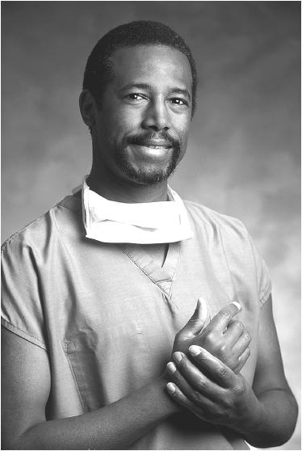

第15章 学习的复兴
自学的价值
查尔斯·达尔文（Charles Darwin）的进化论让他成了人类历史上最有影响力的人物之一，而像他这样的人通常被认为是天生英才。也许出乎你意料的是，像卡哈尔一样，达尔文也曾是个糟糕的学生。他从医学院退学，而让他父亲惊恐的是，他竟转而以博物学家的身份踏上环球航行之路。只身在外，达尔文依靠自己，却有了从全新视角看待他所收集数据的机会。
比智力更重要的往往是毅力。[1]以自学为目标去接触学习材料，能让你以仅有的方式从入门走向精通。通常，不管你的老师多么优秀或课本多么经典，只有当你溜去看看同一领域的其他书籍或视频，才会发现单从老师或课本中学到的不过是冰山一角，事实上这门学科的维度多元而立体，仅这一角就联系着很多其他有趣而迷人的课题，你都可以选择了解。

神经外科医生本·卡尔森（Ben Carson）在外科手术上取得的开拓性创新让他荣获总统自由勋章，但起初他却经常挂科，还曾被医学院劝退。卡尔森知道，自己看书时学习效果最好，而不是在课堂上。于是他反其道而行，不再听课，好让自己有更多的时间可以专心学习书本知识。从此他的成绩突飞猛进，往事皆为浮云。（要注意的是，这一学习技巧并不适于所有人——如果你用这个故事作为逃课的借口，那是自找麻烦！）
在科学、数学和技术等领域，很多人都不得不开辟一条属于自己的学习之路，要么是因为他们别无选择，要么是出于各种原因放弃了先前的学习机会。研究显示，只有学生自己主动参与课题，而非仅听他人言传，才能取得最好的学习效果。[2]一个学生要能靠自己剖析学习材料，且偶尔从同学那得到反馈，才是关键。
在慎重考虑转行医生之后，已经是成年人的圣地亚哥·拉蒙-卡哈尔，在得知自己必须学习大学微积分时曾心惊肉跳。他年少时从没认真对待过数学，对学习材料甚至缺乏最基本的理解。他不得不回头把旧书翻个遍，抓耳挠腮地钻研基础知识。然而，因为个人目标的驱使，卡哈尔学会了更深奥的知识。
导师给初学者最美妙的激励莫过于此：比起宣扬伟人曾经的辉煌成就——那高不可攀的成就会让人目瞪口呆又灰心丧气，反而是为他指出每一个科学发现的根源，指出导致之前一系列错误和过失的做法——从人类的角度出发，要精确解释科学发现，这种信息至关重要。[3]
——圣地亚哥·拉蒙-卡哈尔
发明家兼作家威廉·坎宽巴（William Kamkwamba），1987年生于非洲。他早年上不起学，只能去村里的图书馆自学，在那里他偶然发现了一本叫作《能源利用》（Using Energy）的书。坎万巴不是仅仅读一读了事。才15岁的他，就利用这本书来引导自己去主动学习：他建造了属于自己的风车。他的邻居称他为“misala”——就是疯子的意思。但正是他的创造力帮助他的村庄发电，使用自来水，并激发了非洲乡村技术创新。[4]
美国神经学家兼药理学家坎迪丝·珀特（Candace Pert）接受过良好的教育，并在约翰·霍普金斯大学获得了药理学博士学位。但是她的部分灵感和后续的成功都源于一个非同寻常的起因。就在她进入医学研究院之前，一次骑马发生意外，导致她背部受伤，整个夏天她都饱受治疗的痛苦。[5]正是这段疼痛和止痛治疗的经历推动了她的科学研究。不顾导师的劝阻，坎迪丝取得了一些重大的首次发现，其中就包括鸦片受体，这是人类在毒瘾认识上的重大进展。
大学不是学习的唯一途径。在我们这个时代，很多颇具影响力的名人，像比尔·盖茨（Bill Gates）、拉里·艾利森（Larry Ellison）、迈克尔·戴尔（Michael Dell）、马克·扎克伯格（Mark Zuckerberg）、詹姆斯·卡梅伦（James Cameron）、史蒂夫·乔布斯（Steve Jobs），还有史蒂夫·沃兹尼亚克（Steve Wozniak）都从大学辍学了。将来我们还会看到一些精彩创新的例子，而这些人就是那些能将传统和非传统学习的优点结合到自学中去的人。
你能做到的最重要事情之一，就是对自己的学业负责。在以老师为中心的学习方法中，老师被当成答案的掌握者，这会让学生不经意间对课堂学习产生无助感。[6]令人惊讶的是，教师评估系统可能会加强这种无助感，因为这样的教学系统，会让你把自己的失败归咎于老师，认为其缺乏激励或指导能力。[7]而以学生为中心的学习方法是，学生要克服困难互相学习，并引导自己来掌握学习材料，这方法有着极好的学习效果。
好老师的价值
偶尔当你有机会向名副其实的优秀导师或老师讨教，是很幸运的，这机会一出现，就要把握住。要训练自己克服“囫囵吞枣”的学习阶段，并迫使自己直击问题真正要害，而不是借机会向老师炫耀自己学过什么。你越往这个方向努力就会越轻松，甚至在毫无意识中就已经发生了改变。你在很多方面会越发感到受益匪浅——老师从广博经验中提炼出的一句简单的话，甚至会从此改变你未来的人生轨迹。同时一定要对指导你的人心怀感恩，重要的是要让他们知道，他们的帮助是有意义的。
但要小心，别让自己成为“黏人的学生”。尤其是和善的老师会特别吸引一些学生，而这类学生真正渴求的是导师对他们膨胀自我的关注，而远不只是某个实际问题的答案。再好的老师也没有办法满足那些“永远无法满足的”需求。
同样也要谨防自己陷入“我的答案当然正确”的心理，明明是错的还要强迫老师跟随你糟糕的逻辑步骤。偶尔也许你可以最终证明出自己是对的，但对于大多数老师来说，尤其是对数学和科学领域里水平较高的老师，尝试跟着你不知所云、漏洞百出的思维就像在听一首不着调的歌，简直是吃力不讨好的痛苦折磨。一般来说，最好的做法是重新梳理思路，然后听听老师的建议。当你最终明白了答案，就可以回头纠正你以前犯过的错误。（通常你会意识到，一步失误“满盘皆输”，甚至自己都无法用语言来形容之前的方法有多离谱。）好的老师和导师通常都是大忙人，所以你要聪明地利用他们的时间。
真才实学的优秀教师会让学习材料看起来简单而有深度，他们既能设立让学生互相学习的机制，又会去鼓舞学生自主学习。比如塞尔索·巴塔利亚（Celso Batalha），埃佛格林谷学院著名的物理教授，他为他的学生建立了一个非常受欢迎的阅读小组，让学生去了解学习的方法。很多教授在课堂中运用“主动式教学”和“合作式教学”的技巧，让学生能主动参与教学内容并相互学习。[8]
多年来有件事非常令人惊讶。我遇到的很多优秀老师中，一些人告诉我他们年轻的时候非常害羞，不敢在观众面前讲话，甚至认为自己智商不够，根本不敢想象自己有一天会成为一名老师。但他们最终吃惊地发现，那些曾被他们认为是缺点的特质，最终推动他们成了体贴周到、富有创造力的导师或教授。似乎正是他们的内向，让他们成了比他人更体贴、更敏感的人。过去的不如意让他们谦虚地意识到，要有耐心，而非误以为自己无所不知。
另一个自学的理由：古怪的试题
我们回来看看高中和大学的传统学习，在那里，只要稍微了解一些考试内幕知识，你就能成功通过考试。数学和科学老师有一个秘密，那就是他们经常会抽取课本中必读材料外的问题作为考题。毕竟，每个学期都要出新的考题，这对于老师来说也有难度。这就意味着，那些试题往往会在措辞或解法上稍有不同，可即使你觉得自己已对课本和课堂内容得心应手，这些试题也能杀你个措手不及。结果你认为自己不是学数学和科学的那块料，但其实你真正需要做的，只是在整个学期的学习中，换个角度看待学习材料。
提防智力“狙击手”
圣地亚哥·拉蒙-卡哈尔不仅对如何做科研有非常深入的了解，同时也对人际交往颇有认识。他提醒同学，总会有人批评或者低估你的任何努力或成绩。每个人都会遇到这样的状况，不仅仅只是诺贝尔奖得主。如果你在你的研究领域小有成就，那么周围的人就会感受到威胁。你的成就越大，攻击你并贬低你付出的人就会越多。
而另一方面，如果你考试挂科，或许还会遇到一些话中带刺的人，比如他们会说你其实没这方面天赋。失败并没那么可怕。你要分析自己的问题所在，作为前车之鉴，让自己将来做得更好一些。比起成功，失败是更好的老师，它会让你反思自己的学习方式。
某些“慢”学生之所以在数学和科学的学习中挣扎，是因为那些在别人眼里显而易见的概念，他们却难以理解。很不幸，这些学生有时会认为自己不够灵光。但事实上，他们更加慢条斯理的思考方式，能让他们注意到一些别人忽视掉的困惑细节。这就像徒步旅行者会注意到松树的香味，会发现树丛中小动物的踪迹，而那些驱车前行者只顾着以每小时70千米的速度向前奔跑。但可悲的是，有些导师会觉得，一些普通学生提出的看似简单的问题是对他们的侮辱。他们不会承认这些问题的思考价值，反而可能会无礼打发提问者：“我是怎么跟大家讲的你就怎么做。”而这只会让提问的学生觉得自己笨，而且疑惑更深。（要记住，有些指导老师可能不知道你是否认真思考了材料，或认为你没有自主理解问题，这些情况在我行为叛逆的高中时期就出现过。）
任何时候，如果你觉得自己难以搞懂“显而易见”的道理，不要灰心。去问问你的同学或者上网求助。另一个实用窍门就是试着找到一位颇具好评的指导老师，而他也刚好教同样的课。这些指导老师常常会理解你的感受，有时候会愿意帮助你，只要你不过分麻烦他们。你要提醒自己，不明白只是暂时的，真实情况并不像当下这般看似令人崩溃。
你会发现，当你进入职场之后（也许你还没涉足），比起给予你真正的帮助，很多人会更有兴趣去肯定自己的观点，这会让他们显得精明强干。在这种情况下，以开放之心接受建设性建议和批评，和看似有建设性意义却饱含恶意的言论和批评，是有天壤之别的。不管是什么批评，只要你觉得自己很肯定（“我是对的”），那么很可能你就是正确的，或者（甚至更有可能的是，由于情绪的自欺欺人），你也许需要回过头，从更加客观的角度重新检查。
我们时常听到人们说，同理心对所有人都有好处，但其实不是。[9]重要的是，你得学着时不时地调整到平心静气的状态，这不仅能帮你专心学习，也可以让你无视那些以挫败你为乐的人。这种现象非常常见，人们通常表现得有多合作，他们就有多好胜。对于年轻人来说，这种冷静的心态似乎难以掌握。我们会很自然地对投身其中的事物感到兴奋，我们也希望相信每个人都通情达理，希望每个人对我们都是心存善意的。
就像卡哈尔，正因为别人在某些事情上说你不行，你也一样要去骄傲地追求成功。你是自己的骄傲，尤其应该骄傲于那些让你“与众不同”的特质，并把它用作你成功的秘密法宝。借你与生俱来的逆反心理反抗偏见，不要轻信他人对你下的结论。
该你试试了！
理解“缺点”的价值
从自己身上挑出一个像是缺点的特质，描述它是如何帮助你学习，或帮你进行创造性的、独立的思考并让你从中受益的。你能不能想出什么办法能够削弱这个缺点的负面影响，从而提升它的积极作用？
本章小结
·自主学习是一种最深入、最有效的学习方式：
·自主学习能够提高你独立思考的能力；
·有时它会帮你解答出老师的奇怪考题。
·在学习中，毅力往往比智力更重要。
·锻炼自己去接触那些你敬仰的人。你会结识学识渊博的新导师，往往他们的一席话可能会改变你的未来。但是请爱惜他们的时间。
·如果你没能快速掌握学习材料的重点，不要灰心。常让人惊讶的是，“学得慢”的学生会抓住根本问题，而这些部分通常为进度较快的学生所遗漏。真正了解前因后果能让你从更深层次理解问题。
·人人都是既有竞争意识又有合作意识。总是会有人批评或低估所有你付出的努力，你要学着对这些问题淡然处之。
驻足与回顾
合上书，转开视线，本章的主要观点是什么？哪一个观点是最重要的，或者哪几个观点都很重要？
学习提升
1.没有正式学习项目的引导，自学会有哪些优势和劣势？
2.在维基百科上查询短语——自学成才的名单（list of autodidacts），看看在为数众多的自学成才者当中，你最想效仿哪一位？为什么？
3.从熟人中选出一个你颇为钦佩但从未交谈过的人（不能是名人）。做个搭讪计划，从问候和自我介绍开始，然后采取行动。
纽约时报科学作家尼古拉斯·韦德的独立思想

尼古拉斯·韦德（Nicholas Wade）是纽约时报科学时代版块（Science Times）的专栏作家。作为一个独立思考者，韦德将之归功于与他祖父相似的独立思考——这是一位在泰坦尼克号沉船事件中极少数的男性生还者之一。因为当大多数人听从谣言转移到轮船左舷的时候，韦德的祖父跟随他的直觉，从容不迫地挪向另一边的右舷（因此得以死里逃生）。
这里，在讲述科学家和数学家的书中，尼古拉斯认为以下几本最有趣。
《知无涯者：拉马努金传》（The Man Who Knew Infinity：A Life of the Genius Ramanujan），罗伯特·卡尼格尔著。这本书讲述了一位不可思议的贫寒少年成为知识天才的故事，故事就发生在印度天才数学少年拉马努金和他的朋友——英国数学家G.H.哈代之间。我最喜欢的片段这样写道：[10]
一次哈代去看望拉马努金，在伦敦乘坐的出租车车号1729引起了哈代的注意。他一定琢磨了好一会儿，因为他走进拉马努金的房间时，拉马努金正躺在床上，而他招呼也没来得及打，就冲口而出对这个数字表示不满。他说：“这是一个毫无意义的数。”还加上一句说，他希望这不是一个恶兆。
“不，哈代，”拉马努金说，“它是一个非常有意思的数，在一切可以用两种不同方式表示成为两数立方之和的数中，它是最小的一个。”
《高贵的野蛮人》（Noble Savages），拿破仑·夏侬著。作者笔下美妙的历险故事，让人了解到在完全陌生的文化中该如何生存和发展。作者夏侬原本是一名工程师。他的科学研究让我们对文化发展方式的理解发生了转变。
《数学大师》（Men of Mathematics），E.T.贝尔著。对于在如何思考这个充满魅力的话题上饶有兴趣的人，都会发现这是一部让人拍案叫绝的经典。没有人会遗忘聪明绝顶却难逃厄运的埃瓦里斯特·伽罗瓦（évariste Galois），在他知道自己即将离开人世的前一天晚上，他急切而潦草地写完最后的遗愿和嘱托，追赶着时间在笔下拾取他丰富头脑中的伟大思想，他要赶在他预料中的死亡来临之前。他不时停顿，在书页空白处写下“我没时间了，没时间了”，然后继续万般焦急地涂写下一个纲要。尽管伽罗瓦无疑在人生最后一夜为他毕生的著作做了最后的润色，但说实话，在为数不多激动人心的故事之中，贝尔教授或许还是少有地对伽罗瓦的故事进行了夸张。可是贝尔教授的这本书激励了一代又一代的男男女女。
[1] Colvin 2008；oyle 2009；Gladwell 2008.
[2] Deslauriers et al.2011；Felder et al.1998；Hake 1998；Mitra et al.2005；总统科技顾问委员会（President’s Council of Advisors on Science and Technology），2012.
[3] Ramón y Cajal 1999[1897].
[4] Kamkwamba and Mealer 2009.
[5] Pert 1997，p.33.
[6] McCord 1978。详见Armstrong 2012对相关研究的进一步探讨。Manu Kapur and Katerine Bielaczyc（2012）指出，如果导师的指导不过于严厉，那么学生的表现很可能会有意想不到的提高.
[7] Oakley et al.2003.
[8] See Armstrong 2012及其中参考文献.
[9] Oakley 2013.
[10] 该译文取自乐士、齐民友译本。——译者注